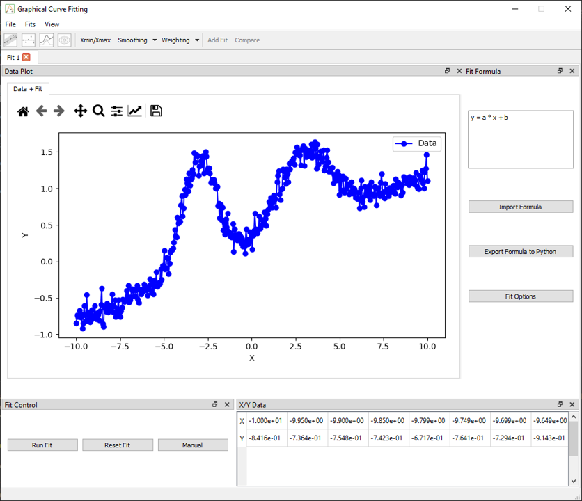
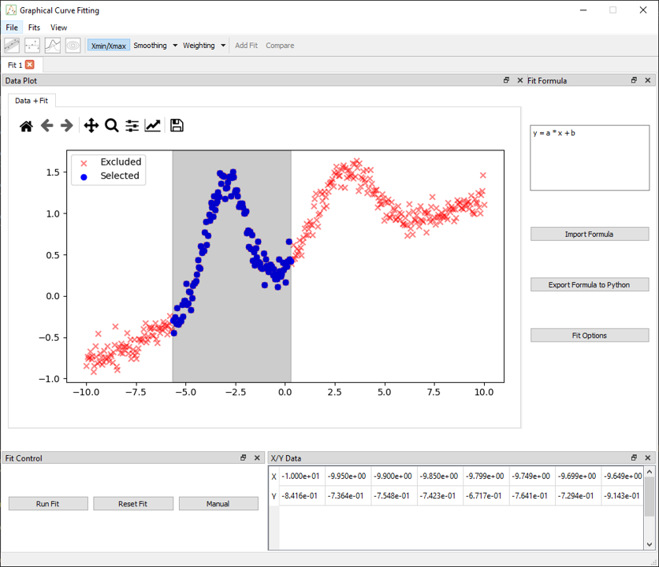
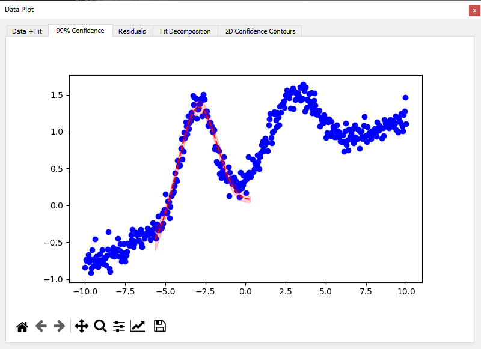
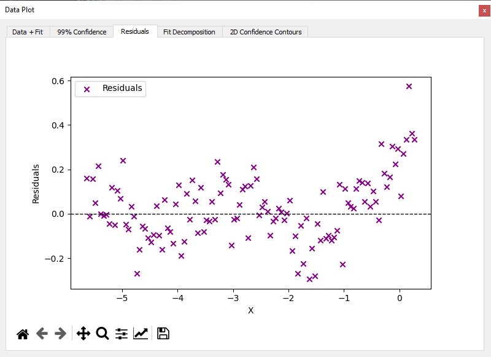
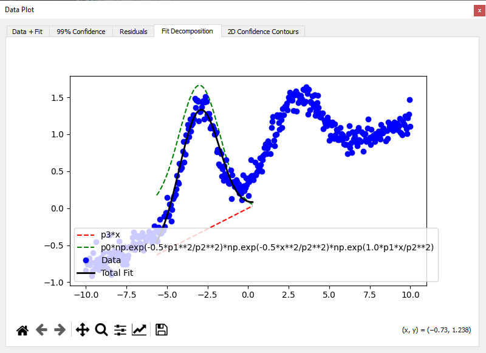
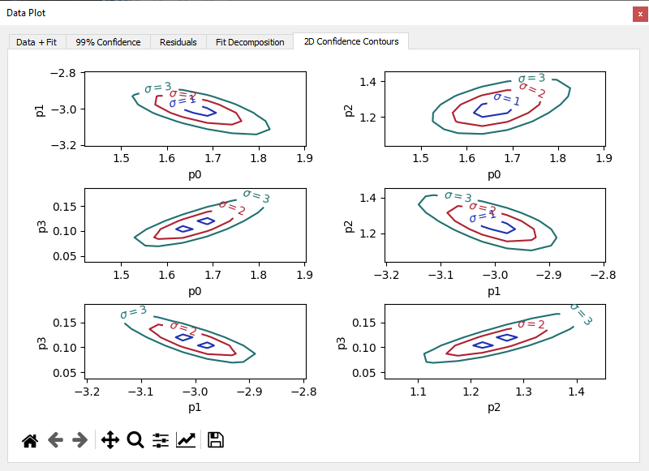

Fit Plots (Least Squares & ODR)
This tutorial presents the available post-fit plots when using least squares (lmfit) or orthogonal distance regression (odr). These diagnostics are not available when using MCMC (emcee), which has its own visualizations.
We will load a sample dataset consisting of two Gaussian peaks and a linear background, restrict the fit range using Xmin/Xmax, and explore:
- 99% confidence bands
- Residuals
- Model decomposition
- 2D parameter correlation contours (not avaible with
odr)
1. Load the Data
Use the menu File > Load Data and select:
examples/data/double_gaussian_with_slope.csv
The data will be automatically plotted, and the table will be filled.

2. Apply Xmin/Xmax Selection
Click the Xmin/Xmax button in the toolbar.
- Click twice on the plot to define the domain to fit
- The shaded area will indicate the active region
This allows excluding noisy or irrelevant parts of the dataset.

3. Define the Formula
In the Fit Formula dock, enter:
y = p0 * exp(-0.5 * ((x - p1)/p2)**2) + p3 * x + p4
All parameters are initialized to 0 by default. You can manually set initial values or use the Fit Options panel to configure them.
4. Run the Fit
In the Fit Control dock:
- Select General Options tab
- Select a method (except emcee)
- Click Run Fit
This will produce the main fit curve and open the Fit Results dock.
5. Visualize the Fit
Once the fit is complete, you can activate various diagnostics via the toolbar:
a. 99% Confidence Band
Enable the Confidence Interval icon.
- A shaded region appears around the fit
- Indicates uncertainty based on parameter covariance

b. Residuals Plot
Click the Residuals icon.
- Opens a Data–Fit residuals tab below the main plot
- Displays the deviation between experimental data and fitted curve, helping detect systematic errors or poor model agreement

c. Decomposition Plot
Click the Fit decomposition icon.
- Displays individual model terms (Gaussian + slope)
- Useful for understanding each contribution

d. 2D Parameter Contours
Enable the 2D Contour icon.
- Shows contour plots of parameter correlations
- Especially useful to detect strong dependencies
